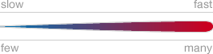

Swiss Trains Flow
Make.OpenData.ch Camp 2012
hide
Location
Locate
Time
Play
Focus
Railways
How many passenger trains are going within the selected hour and what is their speed.
Stations
How many passenger trains stop at the stations within the selected hour.
OpenStreetMap
Blue Marble
None
Legend

Map tiles ©
OpenStreetMap
contributors,
CC-BY-SA